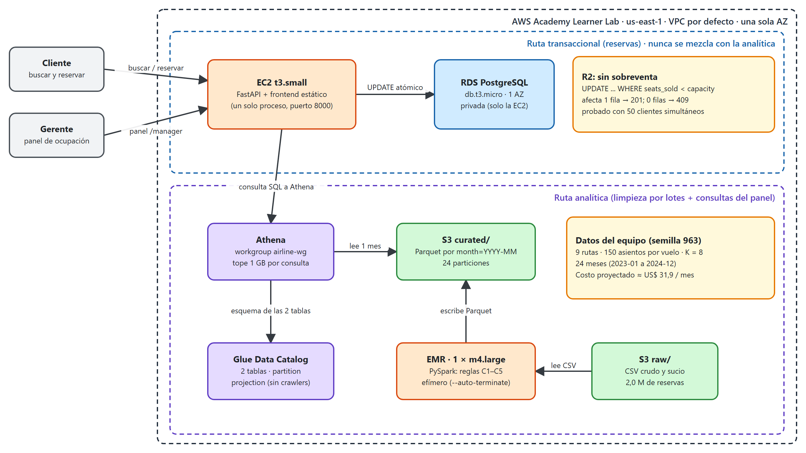

| Equipo (semilla) | 963 |
| Integrantes | (completar con los nombres del equipo) |
| Plataforma | AWS Academy Learner Lab, región us-east-1 |
| Resultado del harness | 70 / 70 puntos (R1–R12), ejecutado contra el sistema desplegado |
| Repositorio | github.com/asantiagodiaz/BD_parcial1 (carpeta parcial2/) |
Este documento actualiza las secciones 5 y 6 del segundo parcial: las decisiones de arquitectura con su justificación y trazabilidad a los requisitos (R1–R12) y a los pilares del AWS Well-Architected, la proyección de costos, y los resultados del harness con la evidencia de cada requisito. Al final se incluyen los hallazgos encontrados durante la construcción, las limitaciones asumidas y el registro de uso de asistentes de IA.
El sistema permite buscar y reservar vuelos mientras la gerencia consulta, en un panel, qué rutas llenan sus aviones y cómo le fue a una ruta en un mes. Las reservas y el análisis del historial viajan por caminos separados:
t3.small ejecuta un único proceso FastAPI que expone la API y sirve
el frontend (dos páginas: cliente y panel gerencial). Los datos están en una RDS PostgreSQL db.t3.micro, de una sola AZ y privada.
docs/diagrams/06-arquitectura-aws-parcial2.drawio.| Dato | Valor | Para qué sirve |
|---|---|---|
| Rutas | 9: CUC-BGA, CTG-BOG, CUC-SMR, ADZ-CTG, PSO-SMR, SMR-BAQ, ADZ-BAQ, PSO-CUC, BGA-BOG | Únicas rutas del historial |
| Capacidad por vuelo | 150 asientos | Base de la ocupación (asientos vendidos / capacidad) |
| K (R2) | 8 | Prueba de concurrencia: con 8 asientos, exactamente 8 de 50 clientes reciben 201 |
| Ventana | 24 meses (2023-01 a 2024-12) | Las 24 particiones month= |
| Ocupación media / cancelación | ≈ 79 % / ≈ 12,5 % | Forma del historial |
Cada decisión cita el requisito que la motiva y los pilares del AWS Well-Architected que la sustentan.
Decisión. Backend y frontend en una sola EC2 t3.small; base transaccional en RDS PostgreSQL db.t3.micro,
una AZ, no pública (solo accesible desde el security group de la EC2).
Por qué. Es lo más barato que cumple R1 y R2. R2 exige que, ante peticiones simultáneas, exactamente capacity reciban 201:
PostgreSQL ofrece el bloqueo de fila que lo garantiza con un único UPDATE condicional. R1 (p95 ≤ 1 s con 20 clientes) se cumple
con una instancia pequeña porque la búsqueda es una consulta indexada por (ruta, fecha): medimos p95 = 0,228 s.
Alternativas descartadas. Contenedores con balanceador (ALB ≈ US$ 16/mes solo en balanceo, sin mejorar ningún requisito); Aurora o DynamoDB
(más caros o sin el bloqueo de fila necesario); PostgreSQL dentro de la EC2 (ahorra ≈ US$ 14/mes pero pierde respaldos y aislamiento de datos).
Requisitos: R1, R2, R11. Pilares: Optimización de costos, Confiabilidad, Seguridad.
Qué hace que Athena sola no haga. El historial crudo está sucio (rutas con espacios y mayúsculas distintas, estados inconsistentes, duplicados, precios
inválidos). El job de EMR aplica las reglas C1–C5, valida y agrega por ruta y mes, y escribe un Parquet particionado reutilizable. Athena podría
transformar con CTAS, pero no ofrece el mismo control de la transformación ni escala igual si el historial crece. Un Glue Job sería equivalente; el curso exige EMR.
Opción elegida. Cluster EMR clásico (emr-7.2.0) de 1 × m4.large, la única clase disponible en el Lab (EMR Serverless no aplica).
Garantía de apagado (R10). Se lanza con run_emr.sh usando --auto-terminate: el cluster solo tiene un step y se apaga solo al terminar.
EMR no forma parte del stack de CloudFormation precisamente para que no pueda quedar vivo por accidente. Resultado medido: 8,4 minutos de reloj por corrida
(unos 6 de arranque y 2 de job), 12 horas normalizadas acumuladas frente al tope de 150, y 0 clusters activos al final.
Requisitos: R4, R10. Pilares: Optimización de costos, Sostenibilidad, Excelencia operativa.
Decisión. Parquet particionado por mes (month=YYYY-MM), con un archivo por partición. Por qué. Parquet es columnar y comprimido;
una consulta de un mes solo lee su prefijo, ≈ 1/24 de los datos. Sin partición y con CSV, la misma consulta escanearía todo el historial. Medición:
una consulta de un mes escaneó 295.129 bytes frente a un límite de 1.601.434 (2 × el tamaño medio de una partición). Las particiones se resuelven con
partition projection (2023-01 a 2024-12), sin crawlers ni MSCK REPAIR. La tabla de métricas (216 filas = 9 rutas × 24 meses) es un solo archivo pequeño.
Requisitos: R5, R6. Pilares: Optimización de costos, Eficiencia de rendimiento, Sostenibilidad.
GET /analytics/occupancy ejecuta una consulta Athena sobre route_month_metrics en cada petición. Latencia: 1,5–2,5 s medidos
(límite 10 s). Costo por consulta: fracciones de centavo (Athena cobra US$ 5 por TB escaneado; cada consulta lee kilobytes). Frescura: los datos son
los de la última corrida de EMR, suficiente para análisis gerencial. Caché: no se justifica: el volumen es bajo y el contrato exige consultar Athena en la
primera petición por par; solo tendría sentido con miles de consultas por día. Los parámetros se validan con lista blanca antes de entrar al SQL
(Athena en este modo no admite parámetros), y el endpoint corta a los 9 s para respetar el límite.
Requisitos: R7, R9. Pilares: Eficiencia de rendimiento, Optimización de costos, Seguridad.
Las reservas viven en RDS; el historial vive en S3 y se consulta con Athena (serverless); el procesamiento pesado corre en EMR, fuera de la EC2.
El análisis nunca consume conexiones ni CPU de la base de reservas. Dentro de la API, el pool de conexiones (20 + 40) está dimensionado para
50 reservas simultáneas y la anti-sobreventa es un único UPDATE ... WHERE seats_sold < capacity: si afecta 1 fila hay cupo (201), si afecta 0 se responde
409 (o 404 si el vuelo no existe). Un CHECK (seats_sold <= capacity) en la tabla es la última barrera.
Requisitos: R1, R2. Pilares: Confiabilidad, Eficiencia de rendimiento.
| Servicio | Alternativa considerada | Requisito | Pilar(es) |
|---|---|---|---|
| EC2 t3.small | Fargate + ALB; Lambda | R1, R2, R8, R11 | Optimización de costos, Excelencia operativa |
| RDS PostgreSQL db.t3.micro, 1 AZ | PostgreSQL en la EC2; Aurora; DynamoDB | R2, R3, R11 | Confiabilidad, Seguridad (cifrada, no pública) |
| S3 | EBS o HDFS del cluster | R4, R5 | Optimización de costos, Sostenibilidad |
| EMR 1 × m4.large efímero | Glue Job; Athena CTAS | R4, R10 | Optimización de costos, Sostenibilidad |
| Glue Data Catalog (sin crawlers) | Crawlers; tablas Hive propias | R5 | Excelencia operativa, Optimización de costos |
| Athena (workgroup con tope de 1 GB por consulta) | RDS analítica; Redshift | R6, R7 | Optimización de costos, Eficiencia de rendimiento |
Servicios facturables en uso: EC2, RDS, S3, EMR, Glue, Athena (6 por diseño). Sin NAT Gateway, sin balanceador, sin Multi-AZ.
Supuestos. Uso gerencial: ≈ 50 usuarios internos, ≈ 2.000 búsquedas y ≈ 200 reservas por día, ≈ 100 consultas Athena por día; historial de 2 años (2 millones de filas, ≈ 100 MB en CSV, ≈ 20 MB en Parquet); una corrida mensual de EMR de 0,5 h con 1 × m4.large; una sola AZ.
| Servicio | Detalle | USD/mes |
|---|---|---|
| EC2 | 1 × t3.small, 730 h | 15,18 |
| EBS | gp3 de 20 GB de la EC2 | 1,60 |
| RDS | db.t3.micro, 1 AZ, 730 h | 12,41 |
| RDS storage | 20 GB | 2,30 |
| S3 | ≈ 2 GB (crudo, curado, resultados) | 0,10 |
| Athena | ≈ 100 consultas/día, ≈ 1 MB cada una | 0,10 |
| EMR | 1 corrida/mes, 1 × m4.large, 0,5 h | 0,20 |
| Glue Data Catalog | 1 base + 2 tablas (capa gratuita) | 0,00 |
| Total proyectado | 31,89 | |
El harness estimó US$ 27,95 a partir de los recursos realmente desplegados (RDS 12,41 + EC2 15,18 + EMR 0,36); la diferencia con lo declarado (≈ 3,9) queda dentro de la tolerancia, porque el estimador del harness no incluye almacenamiento (EBS y RDS storage). Todo el proyecto cabe con holgura en los US$ 50 del Lab, siempre que se destruya el stack al terminar cada sesión.
¿Qué pasa si el volumen de datos o de consultas se multiplica por 10? El costo no se multiplica por 10: EC2 y RDS, ≈ 90 % del total, son fijos y no crecen con el historial. Con datos ×10, S3 pasa de ≈ 0,10 a ≈ 1 y EMR de 0,2 a ≈ 1–2 (más nodos o más tiempo, una vez al mes). Con consultas ×10, Athena pasa de 0,10 a ≈ 1, porque cada consulta sigue leyendo una sola partición. El total subiría de ≈ 32 a ≈ 36 USD (≈ +12 %). Esto se apoya en Parquet más partición (menos bytes escaneados: Optimización de costos) y en no mantener cómputo analítico encendido (Sostenibilidad: se consume energía solo mientras corre el job).
El harness se ejecutó con pytest contra el sistema desplegado en AWS (cuenta del Lab, 19 de octubre de 2026): 23 pruebas pasadas, 70 / 70 puntos.
El informe completo está en parcial2/report.md.
| Req | Descripción | Pts | Evidencia medida |
|---|---|---|---|
| R1 | Latencia de búsqueda | 4/4 | 100 peticiones, 20 clientes: p50 = 0,102 s, p95 = 0,228 s (límite 1 s) |
| R2 | Sin sobreventa | 10/10 | 5 rondas con 50 clientes por 1 asiento: 1 × 201 y 49 × 409. 5 rondas con K = 8: exactamente 8 × 201. Nunca 5xx |
| R3 | Consulta de reserva | 3/3 | 200 con la misma forma; 404 para un id desconocido |
| R4 | Job EMR → Parquet | 8/8 | 24/24 archivos escritos dentro de una corrida COMPLETED; 2.009.247 filas curadas (las esperadas) e ingresos de los meses de prueba exactos |
| R5 | Tablas en Glue | 6/6 | Columnas exactas, Parquet, partición month con partition projection |
| R6 | Athena: top-10 y poda | 8/8 | Top-10 de rutas y ocupaciones dentro de tolerancia; consulta de un mes: 295.129 B escaneados (límite 1.601.434) |
| R7 | Endpoint desde Athena | 8/8 | 5 pares (ruta, mes) correctos en 1,5–2,5 s; 7 consultas a Athena registradas; 404 para datos inexistentes |
| R8 | Flujo en navegador | 6/6 | Buscar, reservar y ver el id de confirmación con Playwright; el backend devuelve la reserva |
| R9 | Panel = endpoint | 4/4 | SMR-BAQ 2024-01: panel 0,8773 = endpoint 0,8773 = valor esperado |
| R10 | Sin EMR vivo y acotado | 5/5 | 0 clusters activos; 12 horas normalizadas (tope 150) |
| R11 | Arquitectura simple y barata | 4/4 | Instancias permitidas, sin Multi-AZ ni NAT; 7 servicios facturables detectados (máximo 8) |
| R12 | Proyección de costos | 4/4 | Declarado US$ 31,89; estimado de lo desplegado US$ 27,95; ambos bajo US$ 50 |
RoleCreationFunction y MainMonitoringFunction). El stack de CloudFormation no crea ninguna.bookings. El enunciado (A.2) y el contrato de datos dicen que bookings cuenta solo las reservas CONFIRMED, pero el oráculo del
harness (oracle.route_month_metrics) lo calcula sobre todas las reservas válidas (confirmadas y canceladas). Ninguna prueba compara esa columna (solo verifica los nombres de columna),
así que no afecta la nota; seguimos el contrato escrito (bookings = seats_sold).m4.large, el driver ocupó casi toda la memoria de YARN y los
ejecutores nunca arrancaron (12 minutos con un solo contenedor). Se canceló el cluster y se fijó la memoria explícitamente (driver 1 GB, ejecutor 3 GB y 2 núcleos, sin asignación dinámica). Con eso el job tarda ≈ 2 minutos.>. La pila se deshizo
antes de crear la RDS (sin costo) y el segundo intento funcionó.winutils.exe (binario de terceros que no se instaló). La lógica de limpieza se verificó contra el oráculo en memoria
(emr/verificar_local.py) y la lectura y escritura en S3 se validó en EMR real.POST /admin/flights está abierto porque el contrato del parcial lo exige para que el harness cree vuelos de prueba. En producción se protegería (red privada, clave o rol).Se utilizó Claude Code (asistente de IA de Anthropic) como apoyo durante la construcción, bajo la regla del enunciado: el equipo debe poder explicar y defender cada decisión. La tabla resume, por fase, qué se pidió y qué se obtuvo, y deja constancia de que el asistente ejecutó los comandos de verificación en la máquina del equipo. Las credenciales del Lab se entregaron al asistente de forma temporal y caducan al terminar cada sesión.
| Fase | Lo que se pidió | Lo que se produjo / verificó |
|---|---|---|
| 1. Contexto | Analizar el repositorio del parcial 1 y opinar | Resumen del sistema, fortalezas y deuda técnica; checklist de ambos parciales |
| 2. Lectura del enunciado | Leer el enunciado del parcial 2 y el harness; explicar qué es un harness y cómo se calcula la semilla | Interpretación de R1–R12; datos derivados de la semilla 963 (rutas, capacidad, K) |
| 3. Backend y frontend | Implementar la API del contrato y las dos páginas, probando con el harness | FastAPI con UPDATE condicional; frontend plano; R1–R3 y R8 pasan en local (23 pts) |
| 4. Job de EMR | Escribir el PySpark de limpieza y validarlo | emr/job.py; verificación contra el oráculo; detección de la inconsistencia de bookings |
| 5. Infraestructura | Definir el stack CDK, el despliegue y el lanzador de EMR | Stack con EC2, RDS, Glue y Athena; deploy.sh y run_emr.sh; corrección de la memoria de Spark y de la descripción del security group |
| 6. Despliegue y pruebas | Desplegar en el Lab nuevo, correr EMR con 2 M de filas y ejecutar el harness completo | 70/70 puntos; informe report.md; destrucción del stack al terminar la sesión |
| 7. Documentación | Sección 5, proyección de costos, diagrama y este documento | Borrador de decisiones y tabla de servicios; cost_projection.yaml; diagrama (.drawio, .svg y .png) |